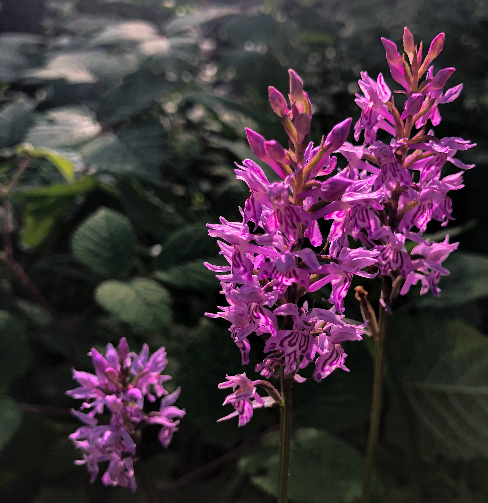
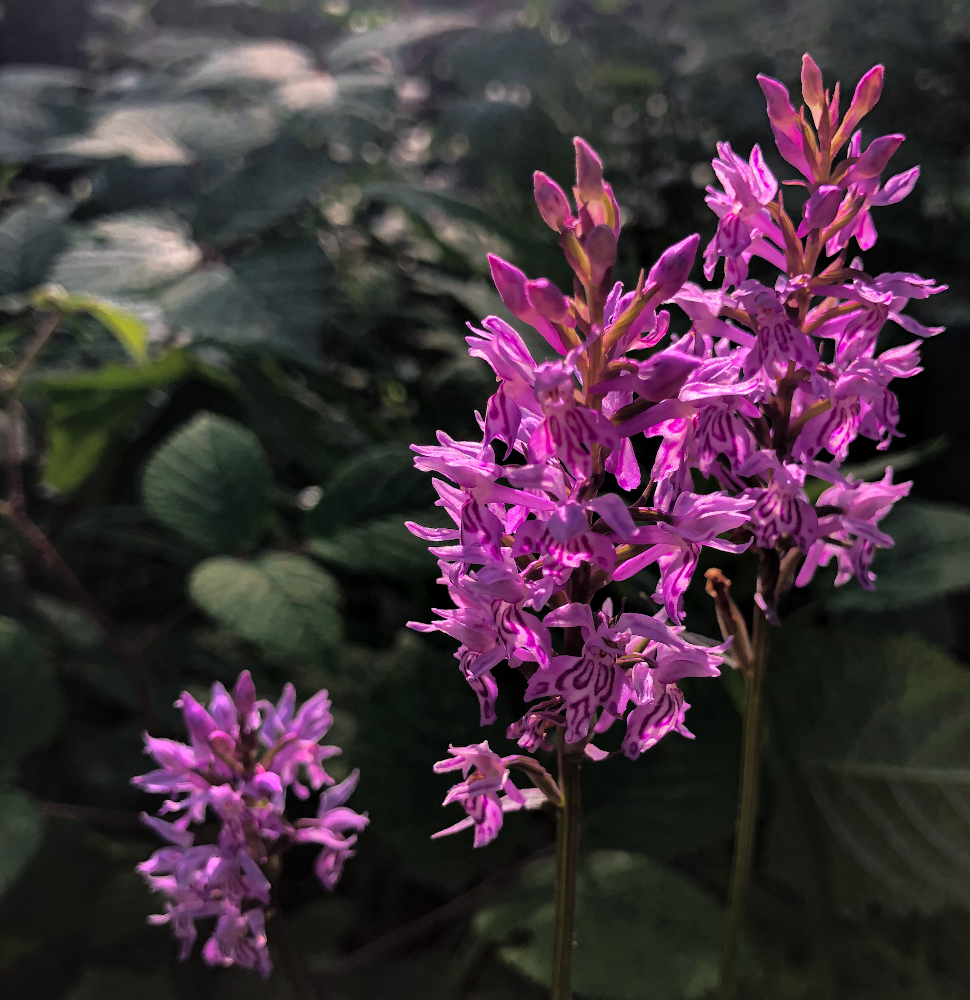

About Me
Rachel Hankai
I was born in Canada, and am a lover of nature and all things outdoor adventure related. Being in a lush green old growth forest, or on a cold, snow-covered mountain peak at sunset, or at the edge of a quiet still lake in the wilderness with the soft song of an early morning loon coming through the mist, are all music to my soul. Even the simple fragrance of crisp fall leaves crunching underfoot, can make the worst day so much better.
I am lucky to have had the opportunity to have travelled and lived in various parts of North America and Europe. Along the way, I have taken whatever photography equipment that I could get my hands on and tried to record and bring with me, the moments that I found most fascinating. I am also an avid gardener and have had many adventures with mother nature and her ideas for what my garden should look like, and I have tried to record her thoughts over the years. I have loved every minute of it.
I have tried to capture those fleeting moments in nature that I have experienced, to be able to share them with others and to have something wonderful to remind me of them all. I hope you will also be able to appreciate some of these moments with me too.
Today, I am living in the Austrian Alps and continue to find new and momentary pauses in time that capture my imagination and my camera to continue the journey of discovering the inspiring world around us.

 
